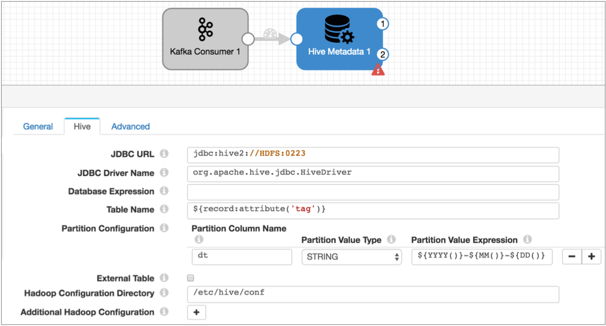
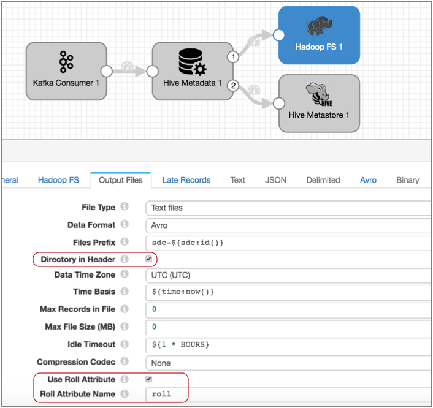
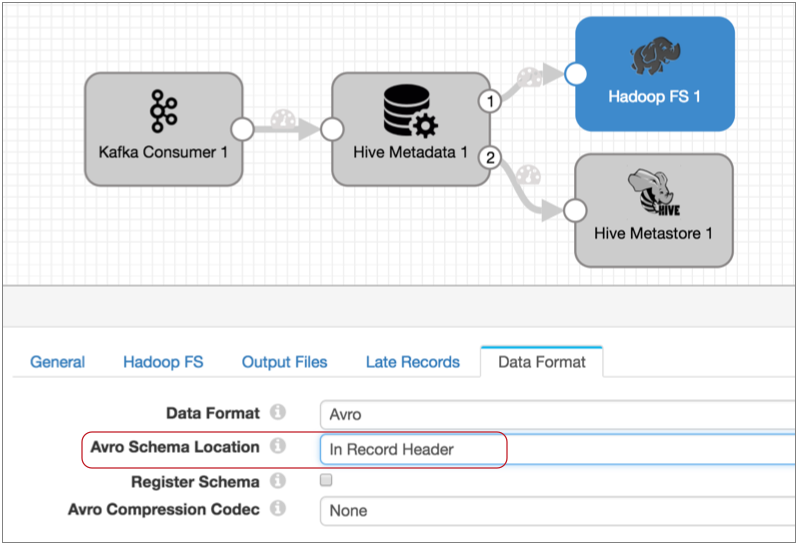
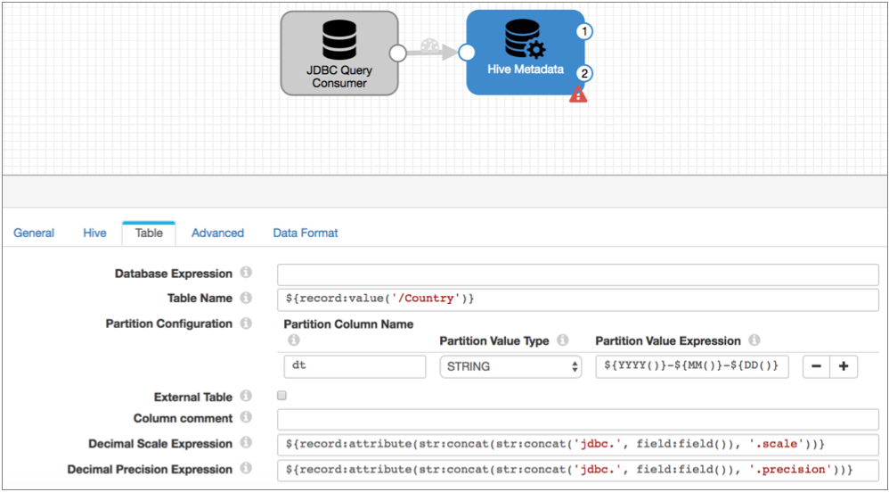
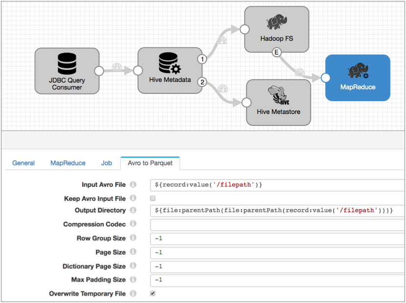

Drift Synchronization Solution (a.k.a. Hive Drift Solution)
Drift Synchronization Solution for Hive
The Drift Synchronization Solution for Hive detects drift in incoming data and updates corresponding Hive tables. Previously known as the Hive Drift Solution, the Drift Synchronization Solution for Hive enables creating and updating Hive tables based on record requirements and writing data to HDFS or MapR FS based on record header attributes. You can use the full functionality of the solution or individual pieces, as needed.
The Drift Synchronization Solution for Hive supports processing Avro and Parquet data. When processing Parquet data, the solution generates temporary Avro files and uses the MapReduce executor to convert the Avro files to Parquet.
The solution is compatible with Impala, but requires additional steps to refresh the Impala metadata cache.
General Processing
The Drift Synchronization Solution for Hive incorporates the Hive Metadata processor, Hive Metastore destination, and the Hadoop FS or MapR FS destination as follows:
- Drift detection
- When processing records, the Hive Metadata processor detects columnar drift and the need for new tables and partitions. It generates metadata records that describe the necessary changes and passes it to the Hive Metastore destination.
- When the Hive Metastore destination receives a metadata record, it compares the proposed changes with the latest Hive metadata, and creates and updates Hive tables as needed.
- The destination can create tables and partitions. It can add columns to tables and ignore existing columns. It does not drop existing columns from tables.
- Record-based writes
- The Hive Metadata processor also adds information to the header of each
record and passes the records to the Hadoop FS destination or the MapR FS
destination. The destinations can perform record-based writes to their
destination systems based on the following details:
- Target directory - Based on user-defined expressions, the Hive
Metadata processor assembles the path where each record should be
stored. It writes the generated path to a
targetDirectory attribute in each record
header.
To write the record to the generated path, configure the destination to use the targetDirectory header attribute.
- Avro schema - The processor writes the Avro schema to the
avroSchema attribute in each record header. It
generates new Avro schemas when necessary based on the record
structure. Used for both Avro and Parquet data.
To use the generated Avro schema, configure the destination to use the avroSchema header attribute.
- Roll files - When a schema change occurs, the processor generates a
roll indicator - the roll header attribute. This allows
the data with the changed schema to be written to an updated Hive
table.
To roll files based on schema changes, configure the destination use the roll header attribute.
- Target directory - Based on user-defined expressions, the Hive
Metadata processor assembles the path where each record should be
stored. It writes the generated path to a
targetDirectory attribute in each record
header.
For example, say you use this solution to write sales data to MapR FS. A partial upgrade of the sales system adds several new fields to a subset of the incoming data.
With the Drift Synchronization Solution for Hive, the Hive Metadata processor notes the new fields in a metadata record and passes it to the Hive Metastore destination. The Hive Metastore destination adds the new columns to the Hive target table. The MapR FS destination then writes the data to the updated table. When writing data without the new fields to the updated table, the destination inserts null values for the missing fields.
Parquet Processing
Here are some differences in how Drift Synchronization Solution for Hive works when processing Parquet data:
- Uses events to trigger Avro to Parquet MapReduce jobs
- When you build the pipeline, you must configure the data-processing destination to generate events. The destination then generates events each time it closes an output file.
- Then, you use a MapReduce executor to kick off the Convert Avro to Parquet MapReduce job each time it receives an event.
- Creates and updates Parquet tables
- The Hive Metastore destination creates and updates Parquet tables as needed. The destination uses the Stored as Parquet clause when generating the table so it does not need to generate a new schema for each change.
- Uses temporary directories for Avro output files
When processing Parquet data, the Hive Metadata processor adds .avro to the target directory that it generates for each record. This allows the data-processing destination to write the Avro files to a directory that Hive ignores as a temporary directory.
As a result, the destination writes files to the following directories: <generated directory>/.avro.
You can configure the MapReduce executor to write the Parquet files to the parent generated directory and to delete the Avro files after processing them. You can also delete the temporary directories after the files are processed, as needed.
Impala Support
Data written by the Drift Synchronization Solution for Hive is compatible with Impala.
Impala requires using the Invalidate Metadata command to refresh the Impala metadata cache each time changes occur in the Hive metastore.
When processing Avro data, you can use the Hive Query executor to automatically refresh the Impala metadata cache. For details, see Case Study: Impala Metadata Updates for DDS for Hive.
When processing Parquet data, you need to run the Impala Invalidate Metadata command manually after the Hive Metastore destination makes changes to the Hive Metastore and after the MapReduce executor converts a file to Parquet.
You can set up an alert to notify you when the Hive Metastore destination makes a change. Simply add a data rule alert on the link to the Hive Metastore destination and have the alert send an email or webhook when metadata records are passed to the Hive Metastore.
Use external tools to determine when the Convert Avro to Parquet MapReduce jobs complete.
Flatten Records
At this time, the Drift Synchronization Solution for Hive does not process records with nested fields. If necessary, you can use the Field Flattener processor to flatten records with nested fields before passing them to the Hive Metadata processor.
Basic Avro Implementation
You can use the Hive Metadata processor, Hive Metastore destination for metadata processing, and Hadoop FS or MapR FS destination for data processing in any pipeline where the logic is appropriate.
A basic implementation of the Drift Synchronization Solution for Hive to process Avro data includes the origin of your choice, the Hive Metadata processor connected to the Hive Metastore destination to perform metadata updates, and to either the Hadoop FS or MapR FS destination to process data, as follows:

The Hive Metadata processor passes records through the first output stream - the data stream. Connect the data stream to the Hadoop FS or MapR FS destination to write data to the destination system using record header attributes.
The Hive Metadata processor passes the metadata record through the second output stream - the metadata output stream. Connect the Hive Metastore destination to the metadata output stream to enable the destination to create and update tables in Hive. The metadata output stream contains no record data.
If your data contains nested fields, you would add a Field Flattener to flatten records as follows:

Basic Parquet Implementation
A basic implementation of the Drift Synchronization Solution for Hive to process Parquet data adds a MapReduce executor to the Avro implementation.
You use the origin of your choice, the Hive Metadata processor connected to the Hive Metastore destination to perform metadata updates, and to either the Hadoop FS or MapR FS destination to process data. You configure the data-processing destination to generate events, and use a MapReduce executor to convert the closed Avro files to Parquet.
The basic Parquet implementation looks like this:

As with Avro data, the Hive Metadata processor passes records through the first output stream - the data stream. Connect the data stream to the Hadoop FS or MapR FS destination to write data to the destination system using record header attributes. Each time the destination closes an output file, it creates a file-closure event that triggers the MapReduce executor to start an Avro to Parquet MapReduce job.
The Hive Metadata processor passes the metadata record through the second output stream - the metadata output stream. Connect the Hive Metastore destination to the metadata output stream to enable the destination to create and update tables in Hive. The metadata output stream contains no record data.
If your data contains nested fields, you would add a Field Flattener to flatten records as follows:

Implementation Steps
- Configure the origin and any additional processors that you want to use.
- If using the JDBC Query Consumer as the origin, enable the creation of JDBC header attributes. For more information, see Header Attributes with the Drift Synchronization Solution.
- If data includes records with nested fields, add a Field Flattener to flatten records before passing them to the Hive Metadata processor.
- To capture columnar drift and to enable record-based writes, configure the Hive
Metadata processor:
- Configure the Hive connection information.
- Configure the database, table, and partition expressions.
You can enter a single name or use an expression that evaluates to the names to use. If necessary, you can use an Expression Evaluator earlier in the pipeline to write the information to a record field or record header attribute.
- Configure the decimal field precision and scale expressions.
You can use constants or expressions that evaluate to the same precision and scale for all decimal fields. Or, you can create more complex expressions that evaluate to different values for different fields.
When processing data from the JDBC Query Consumer or the JDBC Multitable Consumer with JDBC header attributes, use the default expressions.
- Specify the data format to use, Avro or Parquet.
- Optionally configure advanced options, such as the maximum cache size, time basis, and data time zone.
For more information about the Hive Metadata processor, see Hive Metadata.
- To process metadata records generated by the processor and alter tables as
needed, connect the metadata output of the Hive Metadata processor to the Hive
Metastore destination.Note: While you might filter or route some records away from the Hive Metastore destination, the destination must receive metadata records to update Hive tables.
- Configure the Hive Metastore destination:
- Configure the Hive connection information.
- Optionally configure cache information and how tables are updated.
For more information about the Hive Metastore destination, see Hive Metastore.
- Connect the data output of the Hive Metadata processor to the Hadoop FS or MapR FS destination to write records to the destination system using record header attributes.
- Configure the Hadoop FS or MapR FS destination:
- To write records using the targetDirectory header attribute, on the Output Files tab, select Directory in Header.
- To roll records based on a roll header attribute, on the Output Files tab, select Use Roll Attribute, and for Roll Attribute Name, enter “roll”.
- To write records using the avroSchema header attribute, on the Data Format tab, select the Avro data format, and then for the Avro Schema Location property, select In Record Header.
For more information about using record header attributes, see Record Header Attributes for Record-Based Writes.
Note: To compress Avro data, use the Avro compression option on the Data Formats tab, rather than the compression codec property on the Output Files tab. - When processing Parquet data, perform the following additional steps:
- On the General tab of the data-processing destination, select Produce Events.
- Connect a MapReduce executor to the resulting event stream and configure the necessary connection information for the stage.
- On the Jobs tab of the MapReduce executor, select the Convert Avro to Parquet job type and add any additional job parameters that are required.
- On the Avro to Parquet tab, use the default Input Avro File
configuration, specify the Output Directory to use and optionally
configure the additional job properties.
- Use the default Input Avro File expression - This allows the executor to process the file that the data processing destination just closed.
- Specify the Output Directory to use - To write the Parquet files
to the parent directory of the .avro temporary directory, use
the following
expression:
${file:parentPath(file:parentPath(record:value('/filepath')))} - Optionally configure the additional job properties.
Avro Case Study
Let's say you have a Data Collector pipeline that writes Avro log data to Kafka. The File Tail origin in the pipeline processes data from several different web services, tagging each record with a "tag" header attribute that identifies the service that generated the data.
Now you want a new pipeline to pass the data to HDFS where it can be stored and reviewed, and you'd like the data written to tables based on the web service that generated the data. Note that you could also write the data to MapR FS -- the steps are almost identical to this case study, you'd just use a different destination.
To do this, add and configure a Kafka Consumer to read the data into the pipeline, then connect it to a Hive Metadata processor. The processor assesses the record structure and generates a metadata record that describes any required Hive metadata changes. Using the tag header attribute and other user-defined expressions, a Hive Metadata processor can determine the database, table, and partition to use for the target directory and write that information along with the Avro schema to the record header, including file roll indicator when necessary.
You connect the Hive Metadata processor metadata output stream to a Hive Metastore destination. The destination, upon receiving the metadata record from the Hive Metadata processor, creates or updates Hive tables as needed.
You connect the Hive Metadata processor data output stream to a Hadoop FS destination and configure it to use the information in record headers. The destination then writes each record where it wants to go using the target directory and Avro schema in the record header, and rolling files when needed.
Now let's take a closer look...
The Hive Metadata Processor
- Which database should the records be written to?
Hadoop FS will do the writing, but the processor needs to know where the records should go.
Let's write to the Hive default database. To do that, you can leave the database property empty.
- What tables should the records be written to?The pipeline supplying the data to Kafka uses the "tag" header attribute to indicate the originating web service. To use the tag attribute to write to tables, you use the following expression for the table name:
${record:attribute('tag')} - What partitions, if any, do you want to use? Let's create daily partitions using datetime variables for the partition value expression as follows:
${YYYY()}-${MM()}-${DD()} - How do you want to configure the precision and scale for decimal fields?
Though the data from the web services contains no decimal data that you are aware of, to prevent new decimal data from generating error records, configure the decimal field expressions.
The default expressions are for data generated by the JDBC Query Consumer or the JDBC Multitable Consumer. You can replace them with other expressions or with constants.
- What type of data is being processed?
On the Data Format tab, select the Avro data format.
At this point, your pipeline would look like this:

With this configuration, the Hadoop FS destination will write every record to the Hive table listed in the tag attribute and to the daily partition based on the time of processing.
The Hive Metastore Destination
Now to process the metadata records - and to automatically create and update tables in Hive - you need the Hive Metastore destination.
Connect the destination to the second output stream of the processor and configure the destination. Configuration of this destination is a breeze - just configure the Hive connection information and optionally configure some advanced options.
The destination connects to Hive the same way the processor does so you can reuse that connection information:

When the Drift Synchronization Solution for Hive processes Avro data, the destination includes the Stored As Avro clause in table creation queries, by default. You can change that and configure other advanced properties on the Advanced tab. You can generally use the defaults for the advanced properties, so let's do that.
Now, the beauty of the Hive Metastore destination is this: when the destination gets a metadata record that says you need a new table for a new web service, it creates the table with all the necessary columns so you can write the record (that triggered that metadata record) to the table.
And if the structure of the record going to a table changes, like adding a couple new fields, the destination updates the table so the record can be written to it.
That covers the metadata, but what about the data?
The Data-Processing Destination
To write data to Hive using record header attributes, you can use the Hadoop FS or MapR FS destinations. We'll use Hadoop FS destination.
To write data to HDFS, you connect the Hadoop FS destination to the data output stream of the Hive Metadata processor.
When you configure the destination, instead of configuring a directory template, you configure the destination to use the directory in the record header. Configure the destination to roll files when it sees a "roll" attribute in the record header, and when configuring the Avro properties, indicate that the schema is in the record header.
The Output Files tab of the destination might look something like this:

And the Data Format tab looks like this:

With this configuration, the destination uses the information in record header attributes to write data to HDFS. It writes each record to the directory in the targetDirectory header attribute, using the Avro schema in the avroSchema header attribute. And it rolls a file when it spots the roll attribute in a record header.
Note that the destination can also use Max Records in File, Max Files Size, and Idle Timeout to determine when to roll files.
Also, if you want to compress the Avro files, use the Avro Compression Codec property on the Data Formats tab, instead of the general compression option on the Output Files tab.
Processing Avro Data
Now what happens when you start the pipeline?
This pipeline is set up to write data to different tables based on the table name in the "tag" attribute that was added to the record headers in the earlier pipeline.
- If the fields match the existing Hive table, it just writes the necessary information into the targetDirectory and avroSchema stage attributes, and Hadoop FS writes the record to the weblog table.
- If a record includes a new field, the processor generates a metadata record that the Hive Metastore destination uses to update the weblog table to include the new column. It also writes information to stage attributes so Hadoop FS can write the record to the updated weblog table.
- If a record has missing fields, the processor just writes information to stage attributes, and Hadoop FS writes the record to HDFS with null values for the missing fields.
- If a field has been renamed, the processor treats the field as a new field, generating a metadata record that the Hive Metastore destination uses to update the weblog table. When Hadoop FS writes the record, data is written to the new field and a null value to the old field.
- If a data type changes for an existing field, the processor treats the record as an error record.
For each record with a "service" tag, the processor performs the same actions.
Parquet Case Study
Let's say you have database data that you want to write to Parquet tables in Hive. You want to write the data to different Parquet tables based on the country of origin. You don't expect a lot of schema changes, but would like it handled automatically when it occurs.
To do this, you'd start off with the JDBC Query Consumer to read data into the pipeline. You connect the origin to the Hive Metadata processor and configure expressions that define the corresponding database, table, and partition where each record should be written in the Parquet table. The Hive Metadata processor uses this information to assess records and generate the record header attributes that the data-processing destination uses to write the data. It also uses the information to generate metadata records that the Hive Metastore destination uses to create and update tables as needed.
You connect the Hive Metadata processor data output stream to a Hadoop FS destination and configure it to use the information in record headers. The destination then writes each record using the target directory and schema information in the record header, and rolls files upon schema changes. And you configure the destination to generate events so it generates events each time it closes a file.
You connect the Hive Metadata processor metadata output stream to a Hive Metastore destination. The destination, upon receiving the metadata record from the Hive Metadata processor, creates or updates Parquet tables as needed.
And finally, you connect a MapReduce executor to the event stream of the Hadoop FS destination and configure the executor to use the Convert Avro to Parquet job available in the stage. So each time the executor receives an event from the Hadoop FS destination, it processes the closed Avro file and converts it to Parquet, writing it to the updated Parquet tables.
Now let's take a closer look...
JDBC Query Consumer
When you configure the origin, you configure it as you would for any normal pipeline. Specify the connection string to use, the query and offset column to use, and the query interval. If you want all the existing data, omit the initial offset. Use the default incremental mode to avoid requerying the entire table when the origin runs the next query.
When using the origin to process decimal data, ensure that the origin creates JDBC record header attributes. When creating record header attributes, the origin includes the precision and scale of each decimal field in record header attributes. This allows the Hive Metadata processor to easily determine the original precision and scale of decimal data.
You can alternatively enter constants in the Hive Metadata processor for the precision and scale to be used for all decimal fields in the record, but use JDBC record header attributes to use field-specific values. The origin creates header attributes by default.
Here are the JDBC record header attribute properties in the origin:

The Hive Metadata Processor
Connect the JDBC Query Consumer origin to the Hive Metadata processor. When you configure the processor, you have a few things to consider in addition to the basic connection details:
- Which database should the records be written to?
Hadoop FS will do the writing, but the processor needs to know where the records should go. Let's write to the Hive default database. To do that, you can leave the database property empty.
- What tables should the records be written to? You can write all data to a single table by hardcoding the Table Name property. But since you want to write the data to different tables based on the country of origin, let's use an expression to pull the table name from the Country field, as follows:
${record:value('/Country')} - What partition do you want to use?Let's create a dt partition column for daily partitions using datetime variables in the expression as follows:
${YYYY()}-${MM()}-${DD()} - How do you want to configure the precision and scale expressions for decimal fields?
Since you have the JDBC Query Consumer generating record header attributes, you can use the default expressions in the processor:
${record:attribute(str:concat(str:concat('jdbc.', field:field()), '.scale'))} ${record:attribute(str:concat(str:concat('jdbc.', field:field()), '.precision'))}With these expressions, the processor uses the precision and scale that is written to record header attributes by the JDBC Query Consumer for each decimal field in the record.
- What type of data is being processed?
On the Data Format tab, select the Parquet data format.
At this point, the pipeline looks like this:

When processing records, the Hive Metadata processor uses the configuration details to assess records. It generates a targetDirectory header attribute for each record using the country listed in the record for the table and the time the record was processed for the partition.
When a record includes a schema change, the processor writes the new schema to the avroSchema header attribute and adds the roll header attribute to the record. It also generates a metadata record for the Hive Metastore destination. The combination of these actions enables the Hive Metastore destination to update Parquet tables as needed and for the Hadoop FS destination to write the file with schema drift to the updated table.
Remember that for Parquet data, the processor adds .avro to the target directory that it generates for each record. This allows the data-processing destination to write the Avro files to a directory that Hive ignores as a temporary directory.
As a result, the destination writes files to the following directories: <generated directory>/.avro.
The Hive Metastore Destination
Now to process the metadata records - and to automatically create and update Parquet tables in Hive - you need the Hive Metastore destination.
Connect the destination to the second output stream of the processor and configure the destination. Configuration of this destination is a breeze - just configure the Hive connection information and optionally configure some advanced options.
The destination connects to Hive the same way the processor does, so you can reuse that connection information. The Advanced tab includes some properties that only apply to Avro data and a Max Cache Size property to limit the size of the cache that the Hive Metastore uses. By default, the cache size is unlimited, so let's leave it that way.
Now, the beauty of the Hive Metastore destination is this: when the destination gets a metadata record that says you need a new table for a new country, it creates a new Parquet table with all the necessary columns so you can write the record (that triggered that metadata record) to the table.
And if the structure of the record going to a table changes, like adding a couple new fields, the destination updates the table so the record can be written to it. The destination uses the Stored as Parquet clause when generating the table so it does not need to generate a new schema for each change.
This is how the pipeline looks at this point:

That covers the metadata, but what about the data?
The Data-Processing Destination
To write data to Hive using record header attributes, you can use the Hadoop FS or MapR FS destinations. We'll use Hadoop FS destination.
To write Avro files to HDFS, you connect the Hadoop FS destination to the data output stream of the Hive Metadata processor.
First, on the General tab, enable the destination to generate events, as follows:

Now, the destination generates an event each time the destination closes an output file. As described in the Event Record section of the Hadoop FS documentation, the event record includes the filepath and file name of the closed file. The MapReduce executor will use this information to convert the Avro files to Parquet.
When you configure the destination, instead of configuring a directory template, you configure the destination to use the directory in the record header. Configure the destination to roll files when it sees a "roll" attribute in the record header, and when configuring the Avro properties, indicate that the schema is in the record header.
The Output Files tab of the destination might look something like this:

With this configuration, the destination uses the information in record header attributes to write data to HDFS. It writes each record to the directory in the targetDirectory header attribute, using the Avro schema in the avroSchema header attribute. It closes files when it spots the roll attribute in a record header or upon reaching other file closure limits configured in the destination. And it generates an event each time it closes a file.
The MapReduce Executor
To convert the Avro files generated by the Hadoop FS destination, use the Convert Avro to Parquet job in the MapReduce executor. Like all executors, the MapReduce executor performs tasks when triggered by an event. In this case, it will be the file-closure events generated by the Hadoop FS destination.
- Input Avro File - Use the default expression for this property. With the default, the executor uses the directory and file name specified in the filepath field of the event record. Files will be in the .avro directory, but this information will be correctly noted in the event record.
- Keep Avro Input File - Select this if you want to keep the original Avro file. By default, the executor deletes the original file after successfully converting it to Parquet.
- Output Directory - To write the Parquet files to the original directory where
the data was expected - rather than the .avro directory - use the following
expression:
${file:parentPath(file:parentPath(record:value('/filepath')))}The file:parentPath function returns a file path without the final separator. So this expression removes /.avro/<filename> from the filepath.
For example, if the original filepath is: /sales/countries/nz/.avro/sdc-file, then file:parentPath returns the following output path: /sales/countries/nz.
Here's the pipeline and MapReduce executor configuration:

For more information about dataflow triggers and the event framework, see Dataflow Triggers Overview.
Processing Parquet Data
-
Hive Metadata processor assesses each record, using the country in the record to create the output directory for the targetDirectory header attribute.
-
When a record includes a schema change, the processor writes the new schema to the avroSchema header attribute and adds the roll header attribute to the record. It also generates a metadata record for the Hive Metastore destination. The combination of these actions enables the Hive Metastore destination to update Parquet tables as needed and for the Hadoop FS destination to write the file with schema drift to the updated table.
- When the Hive Metastore destination receives a metadata record, it updates the Hive metastore accordingly, creating or updating a Parquet table.
- The Hadoop FS destination writes records to files based on the directory in the targetDirectory header, closing files based on the roll header attribute and any other file closure properties configured in the stage.
- When the Hadoop FS destination closes a file, it sends an event record to the MapReduce executor, triggering the executor to kick off the Convert Avro to Parquet job. The MapReduce executor does not monitor the job.
- After the job completes, the Parquet data becomes available to Hive.
Hive Data Types
The following table lists the Data Collector data types and the corresponding Hive data types. The Hive Metadata processor uses these conversions when generating metadata records. The Hive Metadata destination uses these conversions when generating Hive CREATE TABLE and ALTER TABLE statements.
| Data Collector Data Type | Hive Data Type |
|---|---|
| Boolean | Boolean |
| Byte | Not supported |
| Char | String |
| Date | Date |
| Datetime | String |
| Decimal | Decimal |
| Double | Double |
| Float | Float |
| Integer | Int |
| Long | Bigint |
| List | Not supported |
| List-Map | Not supported |
| Map | Not supported |
| Short | Int |
| String | String |
| Time | String |